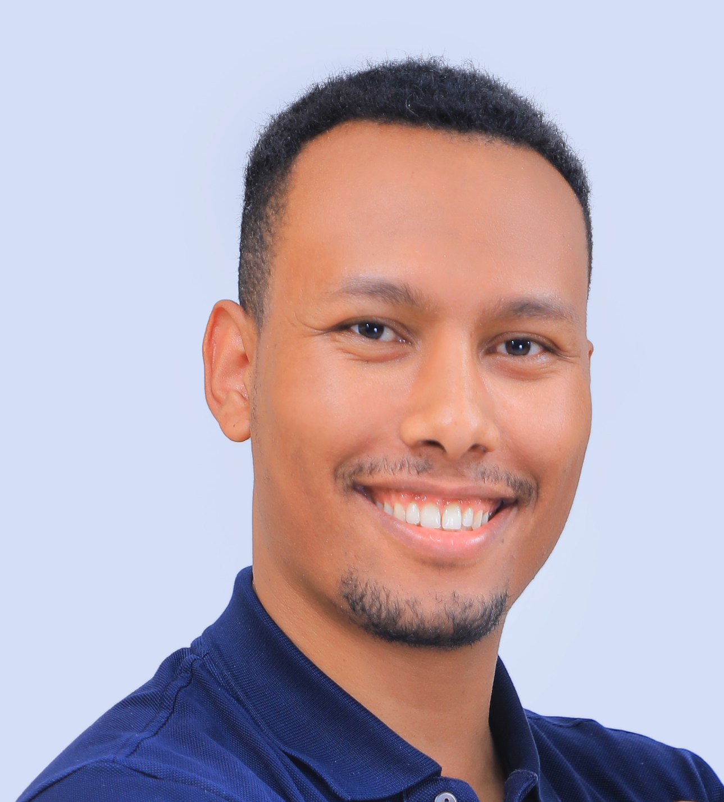

SEG · 20 CLS
3D Semantic Segmentation — LiDAR
Spatio-temporal fusion of sequential LiDAR; ~20 classes. State-of-the-art with only 20% of manual labels via semi-supervised learning.
Senior Machine Learning & Computer Vision engineer. I build perception systems that turn camera and LiDAR into decisions a vehicle can act on — and ship them to the edge.

I’m a senior machine learning and computer vision engineer with 6+ years designing and deploying end-to-end perception for autonomous driving. My work spans camera object detection, distance estimation and bird’s-eye-view scene understanding; multimodal LiDAR–camera fusion; lane detection and road-surface modeling; and the dataset curation and robustness analysis that keep models honest.
What I enjoy most is closing the loop from paper to pavement — taking a state-of-the-art idea and making it run in real time on edge hardware inside a live autonomy stack. Along the way I’ve published at IROS, IEEE RA-L, and ECCV.
NOW: Senior Perception Specialist at Hexagon — Autonomy & Positioning (NovAtel), Ottawa, Canada.
Selected demos from autonomous-driving perception, 3D vision, and robotics. Click any feed to play.
Spatio-temporal fusion of sequential LiDAR; ~20 classes. State-of-the-art with only 20% of manual labels via semi-supervised learning.
3D multi-object tracking, per-object velocity estimation, and on-map localization for urban driving scenes.
Multi-frame LiDAR detection. Moving objects show as motion-blurred points; static ones form denser clusters.
The same detector with a stationary ego-vehicle, showing how the representation separates moving and static agents.
A VAE maps image + silhouette to a latent code to recover 3D structure. Evaluated on ShapeNet chairs, beating prior state of the art.
Vision, self-localization, and short-term motion planning — soccer on its own. 1st place, National Robo-Soccer Challenge (Ethiopia).
Robust target tracking in low-quality, noisy video.
Stays robust against appearance similarity in ambiguous scenes.
A classic mean-shift tracker built during my master’s studies.
Detects both stolen and abandoned objects from a scene.
Lab flight test of a custom-built drone developed for aerial navigation.
Plots circuit diagrams, drawings, and text — a hardware build from the ground up.
Grouped like a segmentation legend — each class, a layer of the perception system.
Computer vision and robotics training across European research labs, with a strong systems foundation from computer engineering.
Erasmus Mundus joint master focused on deep learning for computer vision, multi-view geometry, video analysis, computational photography, optimization, sensor fusion, and 3D imaging.
Research projects included real-time visual object tracking for a mobile camera at UAM and 3D shape prediction from a single RGB image using deep learning.
Engineering foundation in computing, software, hardware, and applied machine learning.
Thesis: botnet detection using machine learning within LAN environments, including anomaly-detection research review and evaluation of machine-intelligence approaches.
Open to roles and collaborations in autonomous-driving perception and applied computer vision.